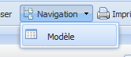
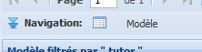

Figure 12 : Fonction navigation.
La fonction Navigation permet de naviguer vers les détails de l’objet sélectionné au menu principal. C’est-à-dire qu’à partir de l’onglet projet vous pouvez naviguer vers les modèles disponibles pour ce projet. À partir de l’onglet modèle , vous pouvez naviguer vers les entités du modèle sélectionné. À partir de l’onglet entité, la navigation se fait vers les propriétés, les relations, les vues pour l’entité sélectionnée.
Naviguer vers les détails d’un objet peut se réaliser de deux façons: par la fonction Navigation du menu des fonctions ou par le menu de navigation de la grille de navigation.
Nous allons réaliser l’exemple à partir de l’onglet projet.
Figure 13 : Menu navigation et options.
Le menu de navigation se trouve dans la partie inférieure de la grille principale. Quand les deux grilles sont affichées à l’écran, ce menu est situé entre les deux grilles.
Nous allons réaliser l’exemple à partir de l’onglet projet.
Saisissez un mot clef ou un nom de module, classe ou fonction.